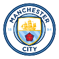
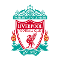
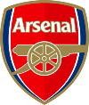
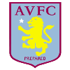
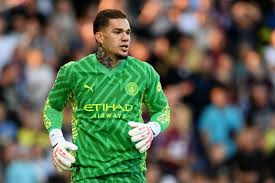
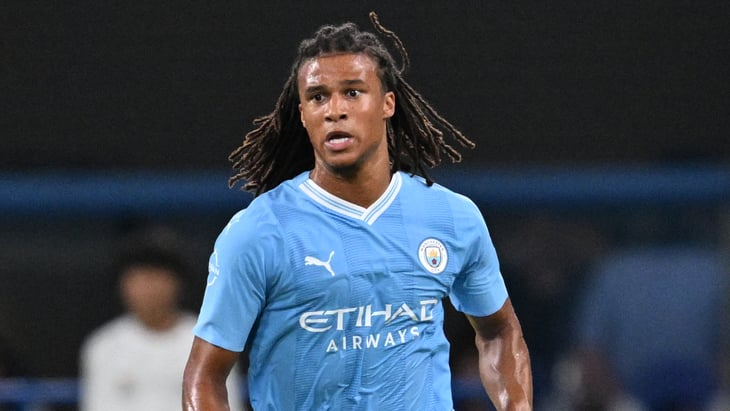
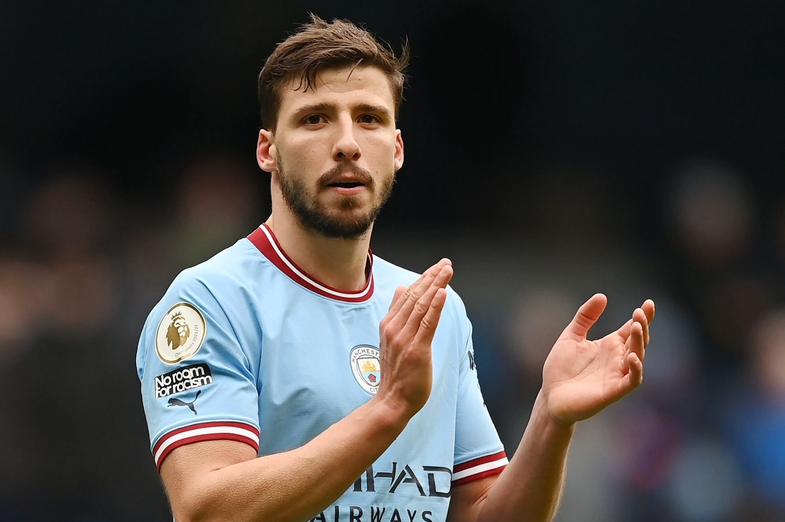
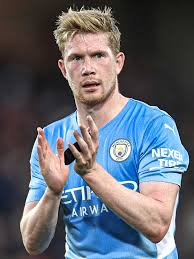
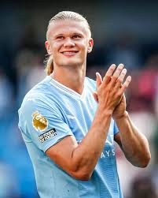

Логотип клубу
Історія клубу
"Манчестер Сіті" став правонаступником клубу "Вест Гортон Сент Маркс", який був заснований ще в 1880 році. Через сім років команда переїхала на "Гайд Роуд" і отримала назву "Ардвік" АФК.
К Футбольній Лізі клуб приєднався у 1892 році, а через фінансові проблеми у сезоні 1893/94 "Ардвік" був реформований у "Манчестер Сіті".
Турнірна таблиця
| Місце | Команда | Очки |
|---|---|---|
| 1 |  Ліверпуль | 15 |
| 2 | Манчестер Сіті | 14 |
| 3 |  Арсенал | 14 |
| 4 | Челсі | 13 |
| 5 |  Астон Віла | 12 |
Гравці основного складу Манчестер Сіті (2024-2025)
- 
- 
- 
- 
- 